我直接小脑上传（x，书太老了，Android 知识更新快，不过学学基础还行
刚开始接触 android 对于这个东西也没有什么头绪，在阅读书籍 《 Android软件安全与逆向分析》(丰生强著) 虽然书中已经给了学习步骤，但是脑子里依旧杂乱。故将得到的知识点写成杂记，待之后希望将可以将各个知识点串联起来
第二章
编写第一个安卓程序以及对该程序进行逆向
————————
编写第一个程序
书中所介绍的开发环境是 Eclipse，但是由于本人比较懒逼，在安装 sdk 的时候已经安装了 Android studio 所以直接用的这玩意写的，写的是最简单的注册程序，程序涉及到界面、文本框、按钮，类似于 windows 的 MFC，但是 java 的类功能更加集成完全。
注册程序的检查函数很显然是要写在 button 中的，但是我不是很懂 Android 程序中项目的结构，只是了解那些里面大致都是些什么东西，而且 Android studio 中的目录结构非常多很复杂，我也不明白在建立文件的时候的各种名称对应这什么内容（先埋坑，后研究
Android studio目录如下
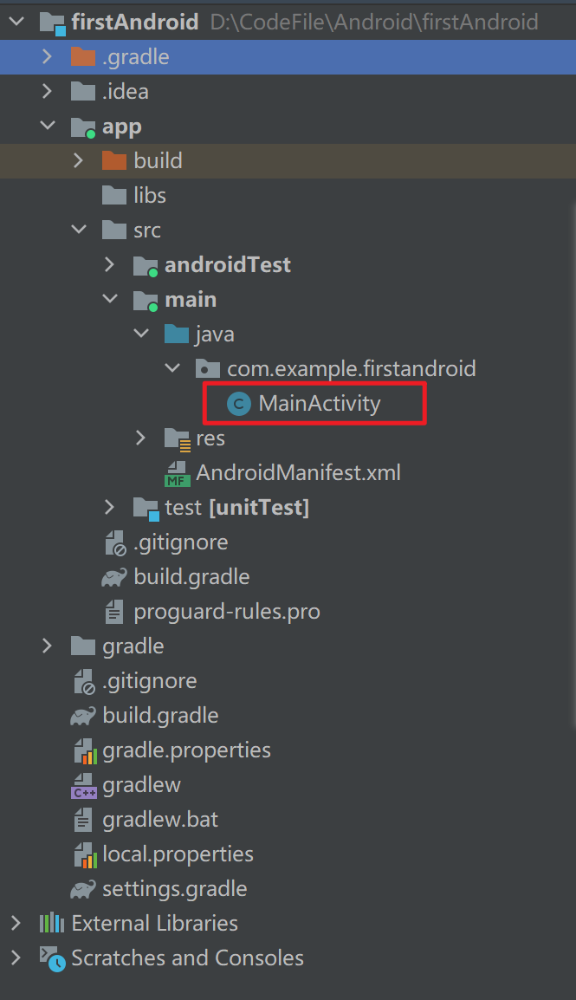
我们所需要写的按钮响应函数就放在图中的红色方框内，并且这个结构目录很奇妙：可以选不同类型的目录结构
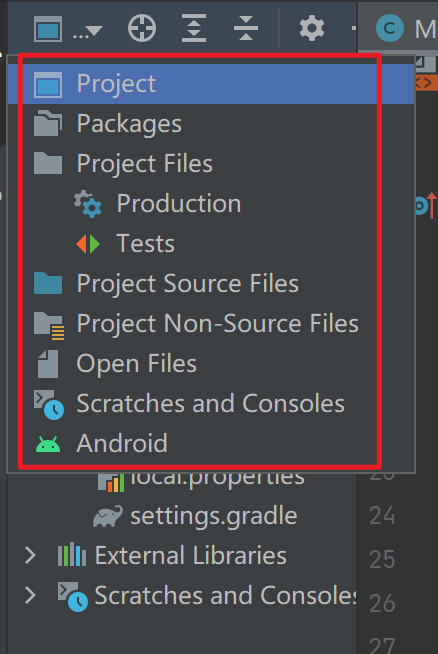
所选的目录结构类型不一样，所展现的内容以及内容编排的方式都不一样，如下图
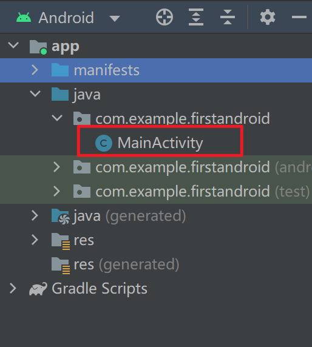
和 Project 对应的 MainActivity 函数位于此处
程序内容编写
界面的设计在下图红框中的文件中呈现，左边是代码，右边是设计效果(虽然有个 TextView 位置看着很奇怪，但是加载到模拟器里面是好的(x
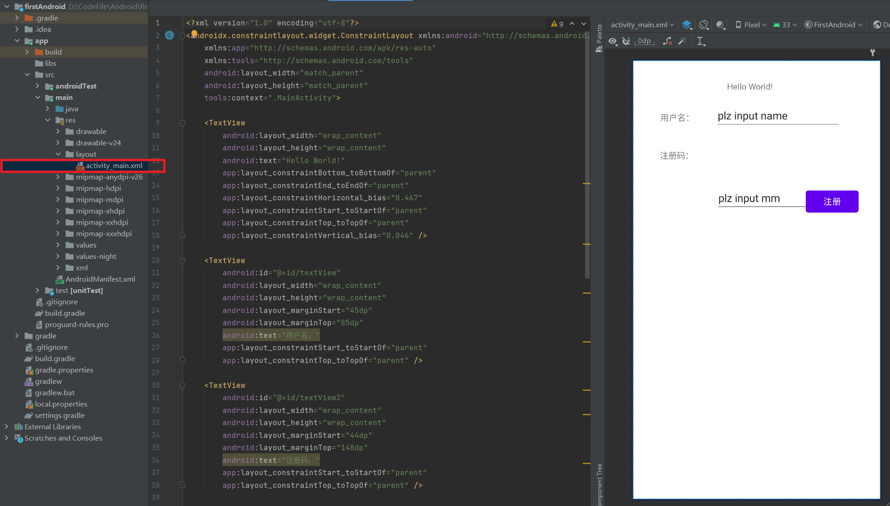
在 MainActivity 中的函数主要内容
1 | package com.example.firstandroid; |
逻辑很简单，但是这里涉及到了一个回调函数的知识，可以发现在 MainActivity 函数中是没有明显调用 onClick 函数的，但是在程序运行过程中却被执行了，可以简单看看了解一下回调。
简单说一说回调
setOnClickListener 函数源码
1 | public void setOnClickListener(@Nullable OnClickListener l) { |
根据源码我们可以发现该函数所需要的参数的类型是 OnClickListener，在里面所执行的操作是将点击设置为可执行，并且将传入的参数赋值给了 getListenerInfo().mOnClickListener。可以推测出来 getListenerInfo() 的返回值类型应该是一个类，mOnClickListener 是类中的一个属性
getListenerInfo() 以及 ListenerInfo 源码
1 | ListenerInfo getListenerInfo() { |
也就是说，通过 setOnClickListener 这个函数，我们达到了如图的效果(猜测，很有可能不准确
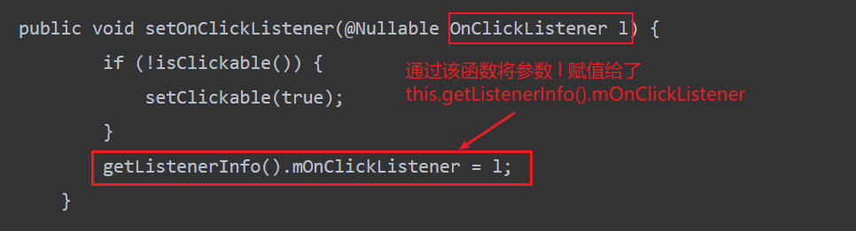
可是明明就只是调用了 setOnClickListener 函数照理来说代码应该就只有短短一行才是，但是我们所写的调用代码却非常长。这种情况的出现是所传入参数的类型所导致的
OnClickListener 源码
1 | public interface OnClickListener { |
这是一个接口类，接口类建立一个对象就必须对里面的方法进行重写，在我们所编写程序中我们需要在重写的 onClick() 函数中进行注册码的校验工作，这也是为什么我们所写的函数长的原因。
反编译 APK 文件
直接使用 apktool 可以对文件进行编译或者反编译
1 | apktool d[ecode] [OPTS] <file.apk> [<dir>] // 反编译 apk 文件命令 |
第三章——Dalvik虚拟机
Dalivik 虚拟机基于寄存器架构
dalvik 字节码和 smali 汇编的关系
虽然 Android 程序是由 java 所编写，但是 Android 操作系统它所运行的是 dalvik 虚拟机，dalvik 虚拟机运行的是由 Java 字节码转换而来的 dalvik 字节码。
由于 dalvik 字节码生涩难懂，可读性很弱，因此研究人员们给出了 Dalvik 字节码的一种助记方式：smali 语法。我们可以借助一些工具：apktool、jeb等。将 dex 文件转换成 smali 文件进行阅读。
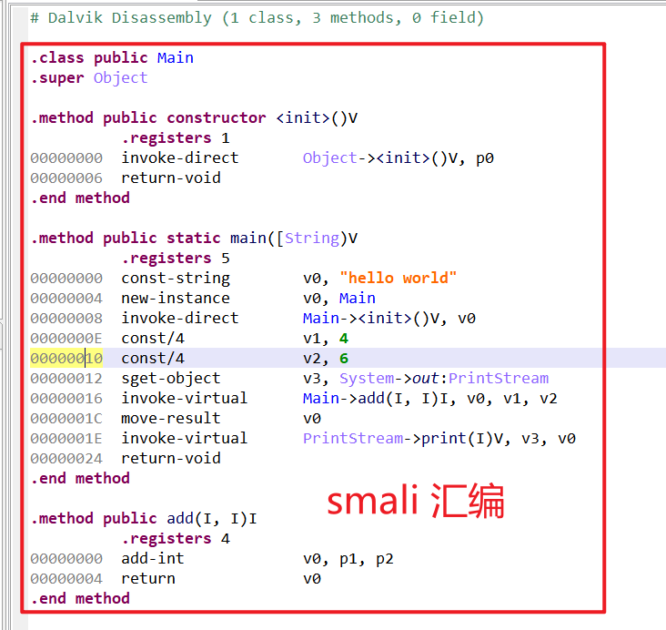
dex文件的生成
新建一个Main.java，使用命令
1 | javac Main.java |
编译生成 Main.class 文件
dx 工具是 AndroidSDK 中自带的一个东西，可以将 class 文件转换为 dex 文件，教程。通过下面的命令
1 | dx --dex --output=Main.dex Main.class |
生成 dex 文件，在这里我们也可以看到 .class 文件和 .dex 文件之间的关系，.class 文件是在 java 虚拟机中的可执行文件，但是 Android 中不支持 java 虚拟机的运行，因此需要将 .class 文件进行转换得到 .dex 文件并使其能在 dalvik 虚拟机中运行
小坑点
我尝试在 eclipse 中建立项目，然后直接使用项目文件夹 /bin/项目名称/Main.class 文件去进行转换，但是会报错
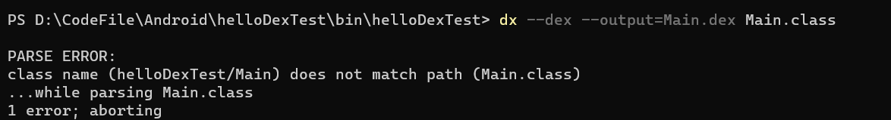
仔细看看使用 javac 编译生成的 Main.class 文件和 eclipse 生成的 Main.class 文件，其实是有差别的
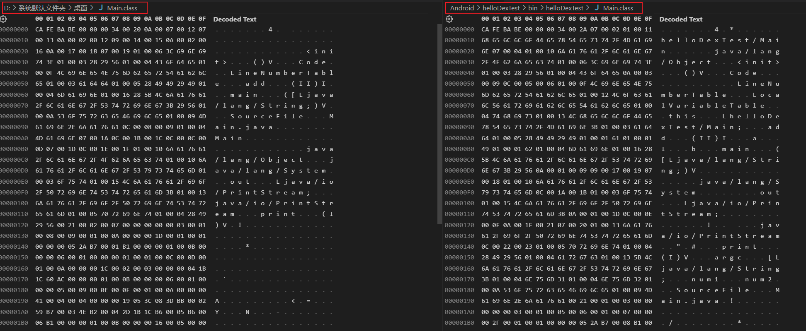
细节就不去深究（先埋个坑吧
Dalvik指令分析
指令语法由指令的位描述和指令格式标识来决定。
位描述约定：
- 每16位的字采用空格分隔
- 每个字母表示四位，每个字母按顺序从高字节开始，排列到低字节。每四位之间可能用 ‘|’ 来表示不同内容
- 顺序采用 A~Z 的单个大写字母作为一个4位的操作码，op 表示一个8位的操作码
- 'Ø’表示这字段所有位为0
指令格式表示约定：
- 大多由三个字符组成，前面两个是数字，最后一个是字母
- 第一个数字表示指令由多少个16位的字组成。
- 第二个数字是表示指令最多使用寄存器的个数。特殊标记 ‘r’ 使用一定范围内的寄存器
- 第三个字母位类型码，表示指令用到的额外数据类型
看了上面肯定依旧不明白到底要怎么看这个东西，太抽象了。
直接来看看实例，我们将上面生成的 dex 文件直接拖入 ida 中，并且通过设置显示字节码
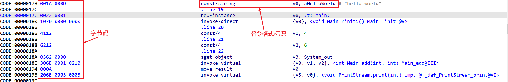
注意点 ：由于 IDA 显示原因，实际上这些字节码在内存中的存储顺序是这样的
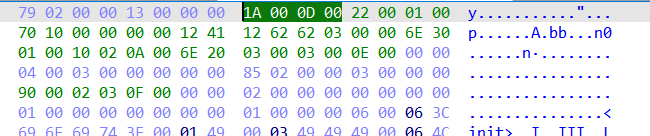
对指令 1241 进行解析举例
-
字节码 12 为操作码(opcode)，查询获得对应的指令格式标识为
11n11n 的意义可以根据指令格式标识约定知晓：
- 第一个数字 1 表示指令由1个16位字组成
- 第二个数字 1 表示指令最多使用1个寄存器
- n 表示一个 4 位立即数
-
对应的位描述为
const/4 vA, #+B更具位描述的约定知晓：
- 字节码 41 中的第一位 4 为给定的字面值4，可以简单理解为一个占有4位字大小的数值4
- 字节码 41 中的第二位 1 为寄存器下标
结合起来就是
| 12 | 4 | 1 |
|---|---|---|
| 操作码 | 立即数 | 寄存器下标 |
| const | 4 | v1 |
我们可以发现在 ida 中我们是找不到指令格式标识的，这是因为 ida 已经根据字节码都分析好了，将每组指令和指令对应的字节码都进行了对应
第四章——Android可执行文件
APK 目录结构
APK 文件的本质实际上是一个压缩包，使用 zip 格式解压软件对 apk 文件进行解压，会发现它由一些图片资源与其他文件组成，这些内容的名称和作用大致如下
| 名称 | 作用 |
|---|---|
| assets目录 | 存放需要打包到 apk 中的静态文件 |
| lib目录 | 程序依赖的 native 库 |
| res目录 | 存放应用程序的资源 |
| META-INF目录 | 存放应用程序签名和目录证书 |
| AndroidManifest.xml | 应用程序配置文件 |
| classes.dex | dex 可执行文件 |
| resources.arsc | 资源配置文件 |
-
META-INF 目录：存放签名信息，用来保证 apk 包的完整性和系统的安全
-
assets 目录：用于存放需要打包到 apk 中的静态文件
该目录支持任意深度的子目录，用户可以根据自己的需求任意部署文件夹架构。
res 目录下的文件会在 .R 文件中生成对应的资源ID，访问的时候需要 AssetManager 类。
-
lib 目录：存放应用程序依赖的 native 库文件，一般是用 C/C++ 编写，这里的 lib 库可能包含4种不同类型，根据 cpu 型号来分类
-
res 目录：用于存放资源文件，存放在该文件夹下的所有文件都会映射到 Android 工程的 .R 文件中，生成对应的 ID，
dex文件结构
Dex 文件整体结构如下所示
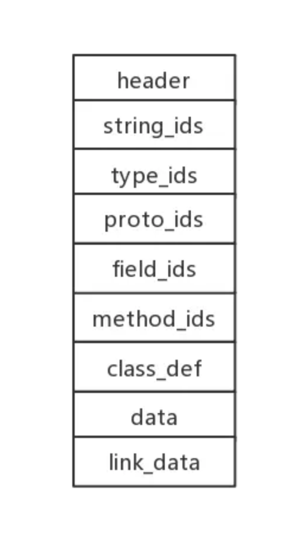
-
dex head 为 dex 文件头，指定了 dex 文件的一些属性，记录其它 6 个部分数据结构在 dex 文件中的物理偏移
-
string_ids 字符串的偏移量
-
type_ids 类型信息的偏移量
-
proto_ids 方法声明的偏移量
-
field_ids 字段信息的偏移量
-
method_ids 方法信息（所在类，方法声明以及方法名）的偏移量
-
class_def 类信息的偏移量
-
data 数据区
-
link_data 静态链接数据区
从 head 到 data 之间的结构体可以理解为 “索引结构区”，真实的数据存放在 data 数据区
对应到文件中就长这个样子
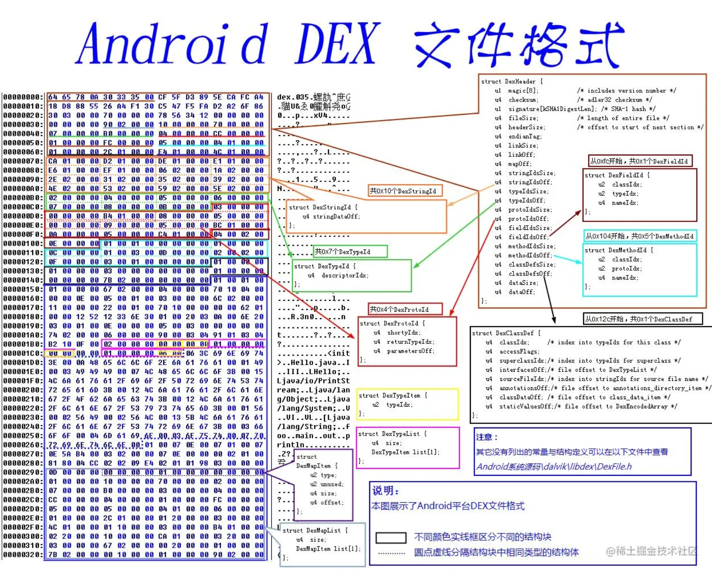
dex head
由结构体 DexHeader 定义，占用 0x70 个字节，声明如下
1 | struct DexHeader { |
u 表示无符号数，u1 u2 u4 u8 分别为 8 16 32 64 位无符号数
-
magic 字段标识了一个有效的 dex 文件，目前它的值固定为
dex.035.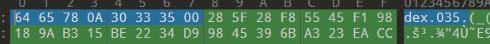
1
2
364 65 78 0a 30 33 35 00
对应内容为
dex + 换行符 + DEX 版本 + NUl(空) -
checksum 为 dex 文件的校验和，用于判断 dex 文件是否被损坏或篡改
-
mapoff 字段指定了 DexMapList 结构的文件偏移
dex map list
由结构体 DexMapList 所定义
1 | struct DexMapList |
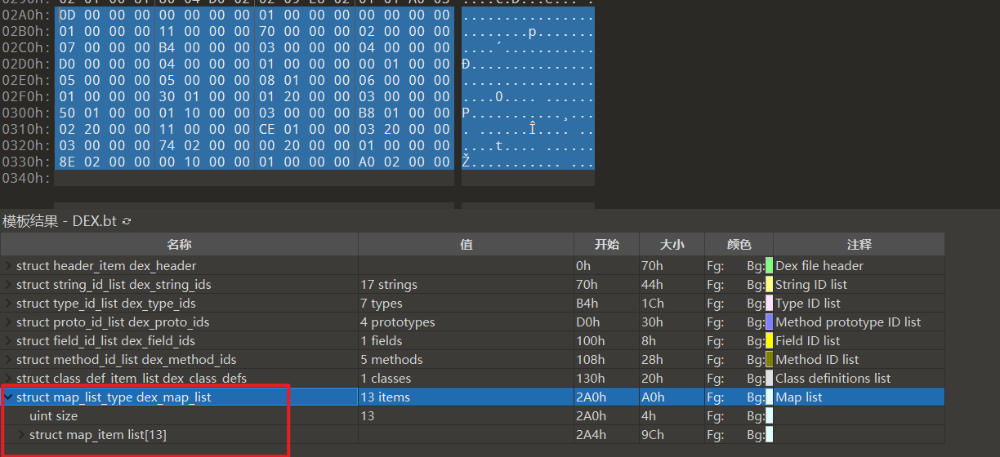
结构体 DexMapItem 结构声明如下
1 | struct DexMapItem |
下面就是一个例子，需要注意的是这里字节存放的顺序是，内存中存放的顺序是 0100，但实际上是 0001
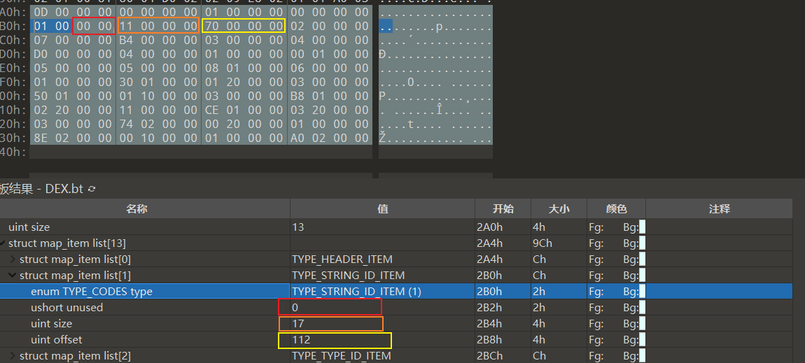
结构体中的 type 字段为一个枚举常量，如下所示，通过对比数值可以知道它的具体类型
1 | enum { |
根据这个名字也可以理解，map 地图，有指向、引导的意思，我们可以根据 dex map list 找到不同 Type 的内容在 dex 文件中的位置和大小，从而可以对其内容进行解析
string_ids
由 DexStringId 结构体对象构成，可以根据该结构体对象的字段在 dex 文件中获取字符串
在 KDexTypeIdItem 的 size 和 offset 以及 DexHeader 的 stringIdsSize 和 stringIdsOff 字段都有说明，分别是连续的 DexStringId 对象个数、第一个对象所在的偏移处
DesStringId 结构体只有一个字段，声明如下
1 | struct DexStringId { |
下面的例子就表明在 0x1CE 偏移处有字符串 “
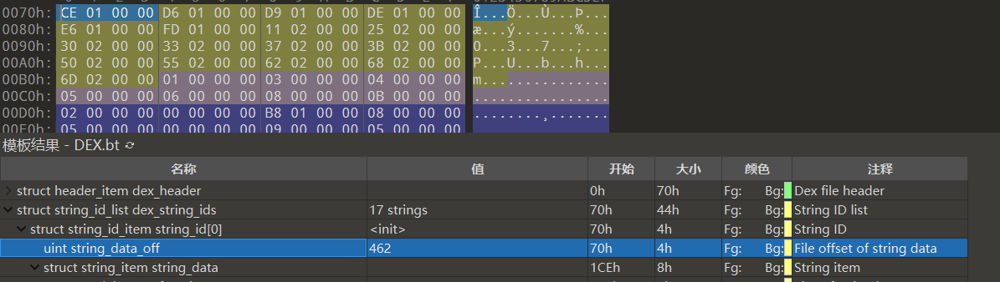
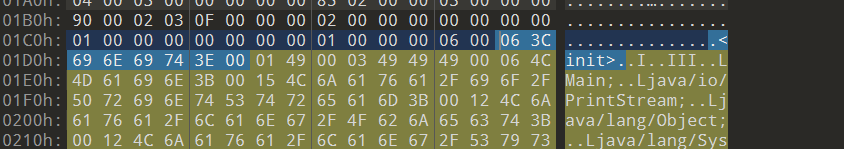
代码如下
1 | private void parseDexString() { |
type_ids
由结构体 DexTypeId 对象构成，用于表示类型信息
在 KDexTypeTypeIdItem 以及 DexHeader 中也均有说明，说明字段和 string_ids 十分类似
DexType 结构体定义如下
1 | struct DexTypeId |
意思就是 descriptorIdx 的值为字符串索引，指向 string_ids 中的内容，通过字符串索引得到的值在 data 池中得到字符串，最后根据所得字符串解析对应类型
下面的例子，通过 descriptorIdx 的值 0x8 指向 string_ids 中的 string_id[8]，通过 string_id[8] 的值找到字符串 ‘V’，字符串 ‘V’ 对应类型就是 void
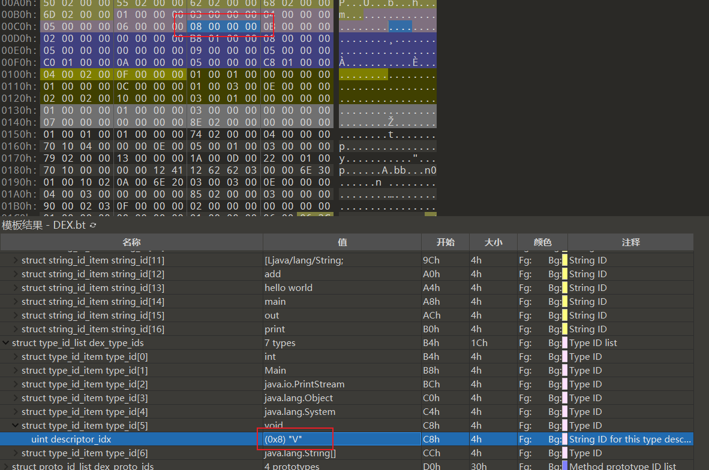
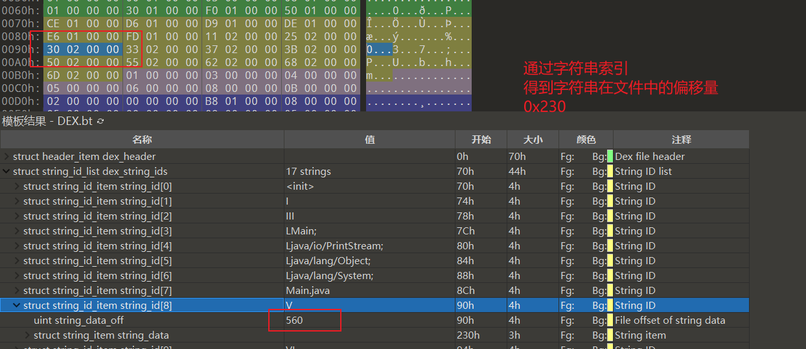
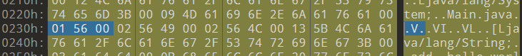
代码如下
1 | private void parseDexType() { |
proto_ids
由结构体 DexProtoId 对象构成，该结构体是一个方法声明结构体
DexProtorId 结构体定义如下
1 | struct DexProtoId |
- shortyIdx：方法声明字符串
- returnTypeIdx：方法返回类型字符串
- parametersOff：指向一个 DexTypeList 结构体，存放了方法的参数列表
DexTypeList 结构体的定义如下
1 | struct DexTypeList |
例子如下：
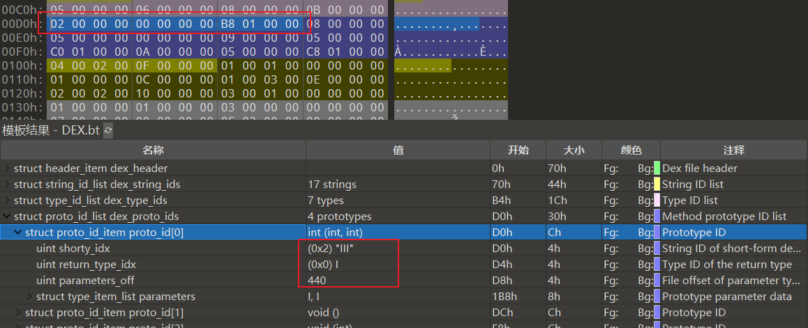
根据这些字段，获得 DexStringId、DexTypeId 列表的索引值 0x2、0x0 以及 DexTypeList 的偏移
根据索引值找到方法声明、方法返回类型
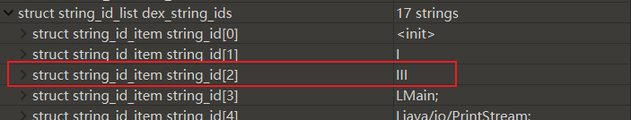
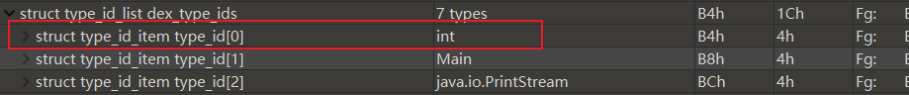
根据偏移量找到 DexTypeList 结构体，根据该结构中的字段可以获取参数个数以及参数类型
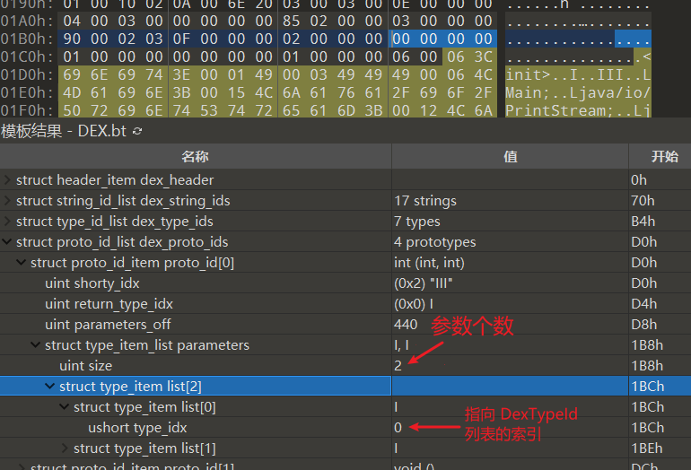
最后就可以获得结果
| 方法声明 | 返回类型 | 参数列表 |
|---|---|---|
| III | I(int) | 2个参数，类型均为I |
解析代码如下
1 | private void parseDexProto() |
fieId_ids
DexFieldId结构体对象组成，结构中的数据均为索引值，该结构体定义如下
1 | struct DexFieldId |
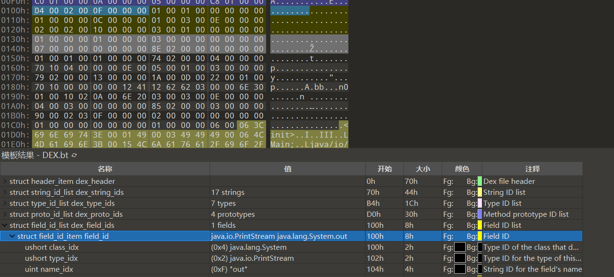
得到的结果如下
| 类类型 | 字段类型 | 字段名 |
|---|---|---|
| Ljava/lang/System; | Ljava/io/PrintStream; | out |
method_ids
由 DexMethodId 结构体对象组成，结构中的数据也均为索引值，指明了方法所在的类、方法的声明以及方法名
该结构体定义如下
1 | struct DexMethodId |
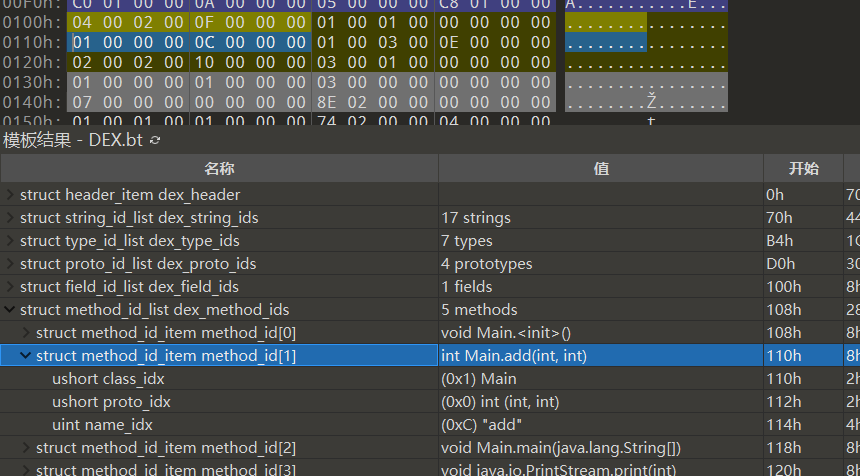
获得的结果如下
| 类类型 | 方法声明 | 方法名 |
|---|---|---|
| Main | III(int(int,int)) | add |
class_def
由 DexClassDef 结构体组成，该结构体的声明如下
1 | struct DexClassDef |
DexClassDef 比上面的结构体更加复杂
-
classdex：索引值，表示类的类型
-
accessFlags：类的访问标志，是以 ACC_ 开头的一个枚举值
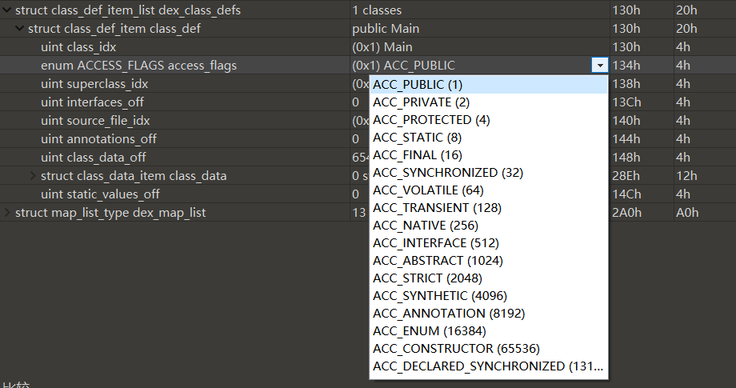
-
superclassIdx：父类类型索引值
-
interfacesOff：如果类中有接口的声明或实现，该字段会指向一个 DexTypeList 结构，否则该值为 0
-
sourceFileIdx：字符串索引值，表示类所在的源文件的名称
-
annotationsOff：指向注解目录结构，根据类型不同会有注解类、注解方法、注解字段与注解参数。如果类中没有注解，则该值为0
-
classDataOff：指向 DexclassData 结构，是类的数据部分
-
StaticValuesOff：指向 DexEncodedArray 结构，记录类中的静态数据
其中的 DexClassData 结构声明在 DexClass.h 文件中，声明如下
1 | struct DexClassData |
DexField 结构描述了字段的类型与访问标志，它的结构声明如下
1 | struct DexField { |
DexMethod 结构描述方法的原型、名称、访问标志以及代码数据块，它的结构声明如下
1 | struct DexMethod |
终于到了存放指令集的结构了，我们从上到下来好好分析一下
图片中的红色方框上下内容一一对应，按照结构体中各个字段的说明，理解其含义难度不大，在这里就不展开细说
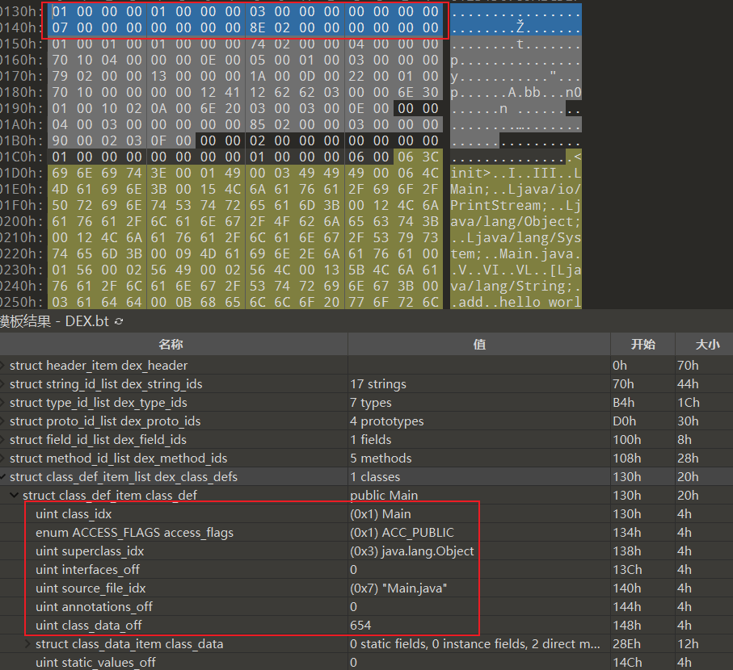
关注最后的 class_data_off 字段，它指向了一个 DexClassData 结构体，我们根据其偏移量 0x28E 找到结构体中的内容
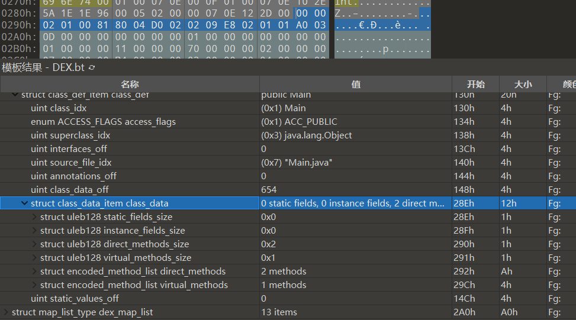
前面 4 个字段为结构体 DexClassDataHeader 中的内容，4个 uleb128 值结果分别为 0、0、2、1，表示该类不含字段，有2个直接方法与1个虚方法
直接对 DexMethod 进行解析
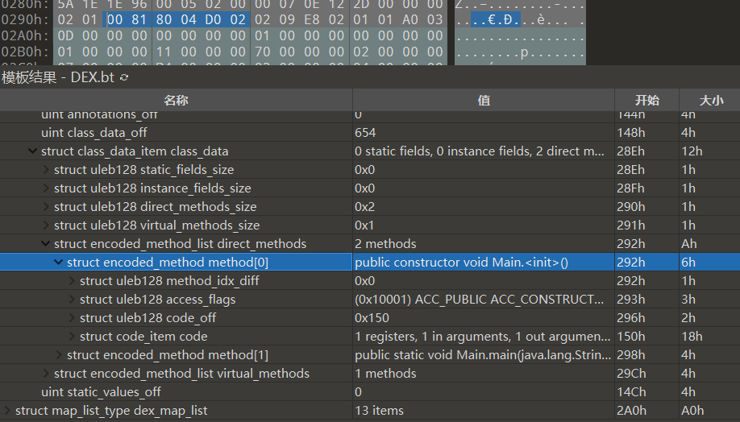
第一个字段的为 DexMethodId 索引，值为 0x0，得到 “
从 0x150 处开始解析 DexCode 结构体
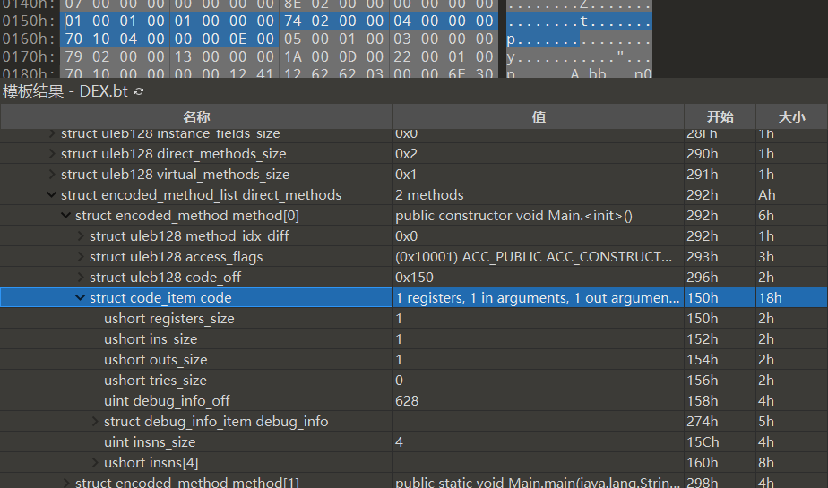
前面三个字段得出的结果为：寄存器个数、参数、内部函数使用寄存器的个数都为1个。insns_size 的字段值为 4，说明方法中有4条指令，指令为 “7010 0400 0000 0e00”。之后按照 dalvik 指令分析的方式去分析这些指令即可
-
根据 70 查找获得 opcode 为 invoke-direct
-
指令格式标识为 35c
-
查找到 35c 的指令格式为 “A|G|op BBBB F|E|D|C”
且有 7 种表示方式
[
A=5]op{vC, vD, vE, vF, vG}, meth@BBBB
[A=5]op{vC, vD, vE, vF, vG}, site@BBBB
[A=5]op{vC, vD, vE, vF, vG}, type@BBBB
[A=4]op{vC, vD, vE, vF},kind@BBBB
[A=3]op{vC, vD, vE},kind@BBBB
[A=2]op{vC, vD},kind@BBBB
[A=1]op{vC},kind@BBBB
[A=0]op{},kind@BBBB根据指令 7010 0400 0000 得到 A、G 的值分别为 1、0；BBBB 为 0x4，F=E=D=C=0。按照格式 [
A=1]op{vC},kind@BBBB 去解析，由于 BBBB 为 kind@ 类型，它是指向 DexMethod 列表的索引值，通过其索引找到方法名 “”。指令 0e00 直接查表得到 return-void，最后得到结果如下的指令代码 1
27010 0400 0000 invoke-direct {0}, Ljava/lang/Object; .<init>: ()v
0e00 return-void
第五章——静态分析Android程序
一直都搞不清楚各种类型文件的关系，大致理了一下也不知道对不对
- apk文件就相当于是压缩包，里面有在 dalvik 虚拟机中运行的 dex 文件以及各种资源和运行 apk 时所需的库
- 对 apk 文件进行反编译就相当于将 dex 文件转化为具有进一步可读性的 smali 汇编
- 通过工具 dex2jar 可以直接将 .dex 文件转化为 .jar 文件，.jar 文件就是反编译后的 java 源码文件。
- 工具 jd-gui 能够查看反编译后的 Java 源码文件，简单来说就是能将 .jar 文件变成 java 代码展现出来
之前一直在纠结这个 apktool 反编译之后的文件和工具反编译之后的文件之间有什么关系，那现在看来就是没啥大关系
smali代码阅读
循环语句
switch 分支语句
看 switch 分支语句推理出所对应的 java 代码没有什么太大的难度，重点来讲讲如何从 dex 文件中分析得出 switch 语句中的 case 语句块的位置
1 | .method private packedSwitch(I)Ljava/lang/String; |
指令 packed_switch 表示 switch 分支的开始，该指令对应的机器码为 2B 02 13 00 00 00，具体分析如下
- 2B 为 opcode 代表指令 packed_switch，该指令在 Dalvik 中的格式为：packed_switch vAA,+BBBBBBBB。其中 “+BBBBBBBB” 为 packed-switch-payload 格式的偏移
- 02 为 VAA 即寄存器 p1
- 00000013 为偏移量 0x13
在 ida 中找到 packed_switch 语句的偏移地址：0x2cb1a。计算得出结构体 packed-switch-payload 的偏移地址：0x2cb1a+2*0x13=0x2cb40
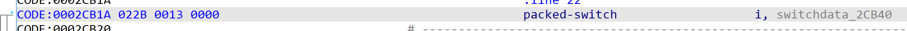
找到 packed-switch-payload 所对应的内容
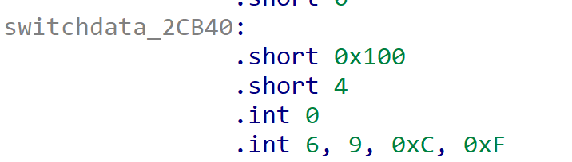
该结构体的格式如下
1 | struct packed-switch-payload |
也就是说
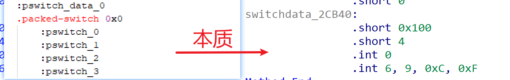
那么 6，9，0xc，0xf 都代表着4个 case 对于语句 packed_switch 的偏移量，再根据 packed_switch 语句的地址 0x2cb1a 就可以计算得出 case0-case3 每一块的偏移地址
switch 分支除了 packed_switch 还有 sparse_switch，它们之间的区别就在于 packed_switch 的 case 判断值是顺序递增的，而 sparse_switch 的 case 判断值是由case 值-> case 标号 的形式给出的
1 | :sswitch_data_0 |
其他分析过程都和 packed_switch 大同小异，由于 case 判断值不再是顺序递增，因此 spare-switch-payload 结构和上面的 packed 也有所区别
1 | struct sparse-switch-payload |
也就是说
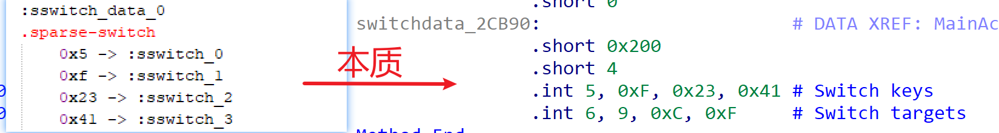
try/catch 语句
不同于 switch 语句，try/catch 语句没有对应的 dalvik 指令，它是通过相关的数据结构来保存相关信息，在 dex 文件格式中有 Dexcode 数据结构，声明如下
1 | struct DexCode { |
通过里面的信息可以得到 try/catch 语句中每个 try 语句块的范围
如果是嵌套式的 try/catch 语句对应的 smali 语句会多产生虚拟的 try/catch，具体例子如下
1 | private void a() |
当在执行 catch(xxx) 中的代码时，如果也出现了异常，那么这个异常就会向外抛出并判断是不是 YYY 异常。smali 汇编中多出来的那个 try/catch 结构就用于处理这种情况。
idaPro 静态分析
idapro 支持对 dalvik 指令集的反汇编，对于 Android 程序来对，我们先从 apk 文件中解压得到 classes.dex 文件，然后使用 ida 对该文件进行分析
导入 dex.idc 文件，里面有大部分 dex文件的数据结构，使用 ALT+Q 修改结构体类型，CTRL+S 段间跳转，可以根据 dex 文件结构和 dex.idc 文件中的数据结构整理 .dex 文件
dex 文件的所有方法都可以通过 Exports 选项卡查看，方法的命名规则如下
1 | 类名.方法名@方法声明 |
例子如下
1 | invoke-super {this, c}, <ref ResourceCursorAdapter.swapCursor(ref) imp. @ _def_ResourceCursorAdapter_swapCursor@LL> |
其中的前半部分 invoke-super {this, c}, <ref ResourceCursorAdapter.swapCursor(ref)
前面的 ref 为 swapCursor( ) 方法的返回类型，后面的 ref 为该方法的参数类型
后半部分 imp. @ _def_ResourceCursorAdapter_swapCursor@LL> 是 ida 的自动识别，imp 表明该方法为 Android SDK 中的 API，@后面的部分为 API 的声明，类名于方法名之间使用下划线做分隔
本文作者：GhDemi
本文链接： https://ghdemi.github.io/2022/12/27/Android%E6%9D%82%E8%AE%B0/
文章默认使用 CC BY-NC-SA 4.0 协议进行许可，使用时请注意遵守协议。